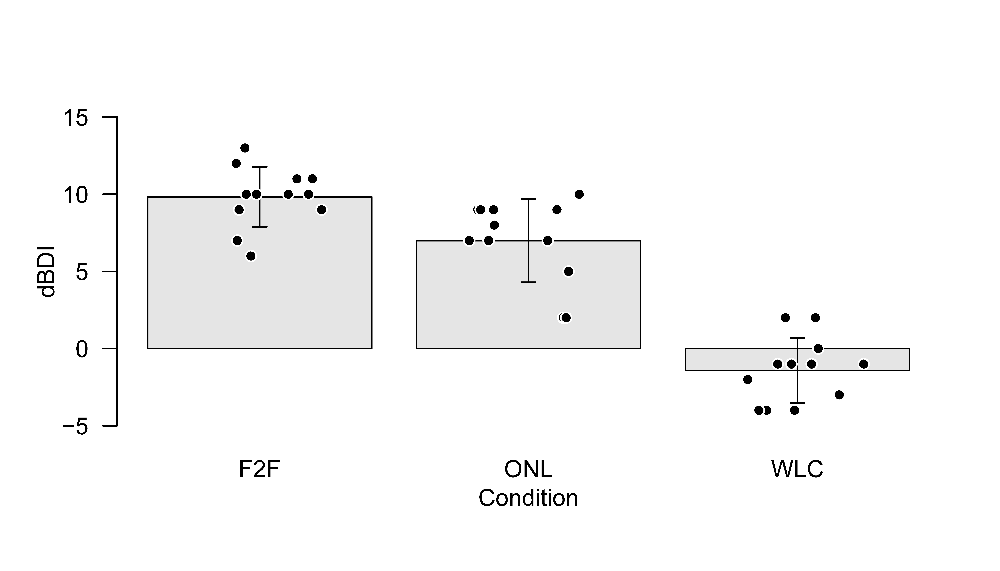
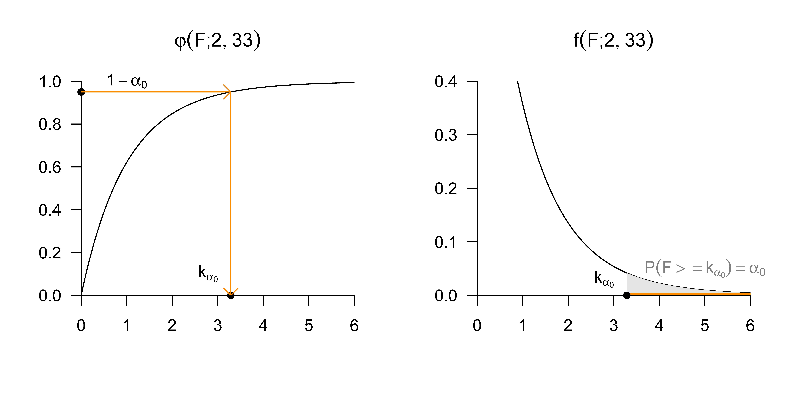

| COND | dBDI | |
|---|---|---|
| 1 | F2F | 9 |
| 2 | F2F | 7 |
| 3 | F2F | 10 |
| 4 | F2F | 11 |
| 13 | ONL | 2 |
| 14 | ONL | 7 |
| 15 | ONL | 9 |
| 16 | ONL | 9 |
| 17 | ONL | 8 |
| 25 | WLC | -1 |
| 26 | WLC | 2 |
| 27 | WLC | -3 |
| 28 | WLC | -1 |
| 29 | WLC | 0 |
32 Einfaktorielle Varianzanalyse
32.1 Anwendungsszenario
Das Anwendungsszenario einer einfaktoriellen Varianzanalyse ist durch das Vorliegen von \(n\) univariaten Datenpunkten von zwei oder mehr Gruppen randomisierter experimenteller Einhe\(i\)ten gekennzeichnet, die sich hinsichtlich der Level eines experimentellen Faktors unterscheiden. Ist die Anzahl an Datenpunkten in jeder Gruppe gleich, so spricht man auch von einem balancierten einfaktoriellen Varianzanalysedesign. Von den Datenpunkten der \(i\) ten Gruppe bzw. des \(i\)ten Faktorlevels wird dabei angenommen, dass sie Realisierungen von jeweils \(n_{i}\) unabhängigen und identisch normalverteilten Zufallsvariablen sind, deren wahre, aber unbekannte, Erwartungswertparameter sich potentiell über die Gruppen hinweg unterscheiden und deren wahrer, aber unbekannter, Varianzparameter über Gruppen hinweg identisch ist. In diesen Grundannahmen handelt es sich bei dem Szenario der einfaktoriellen Varianzanalyse also um eine direkte Generalisierung des Einstich- und Zweistichproben-T-Test Szenarios zu (potentiell) mehr als zwei Gruppen. Umgekehrt können die Einstichproben- und Zweistichproben-T-Test Szenarien natürlich auch als einfaktorielle Varianzanalyseszenarien betrachtet werden, bei denen der experimentelle Faktor (nur) ein oder zwei Level, respektive, aufweist. Schließlich wird wie im Falle der T-Test Szenarien meist vorausgesetzt, dass ein Interesse an einem inferentiellen Vergleich der wahren, aber unbekannten, faktorlevelspezifischen Erwartungswertparameter besteht.
32.2 Anwendungsbeispiel
Als konkretes Anwendungsbeispiel betrachten wir die Analyse von Pre-Post-Interventions-BDI-Differenzwerten von drei Gruppen von jeweils 12 Patient:innen, die unterschiedliche Therapiesettings (Face-to-Face und Online) bzw. eine Wartelistenkontrollbedingung durchlaufen haben, wie in Tabelle 32.1 exemplarisch dargstellt. Die erste Spalte der Tabelle (COND) listet das patient:innenspezifische Therapiesetting (F2F: face-to-face, ONL: online, WLC: waitlist control) für jeweils drei Patient:innen jeder Studiengruppe auf. Die zweite Spalte der Tabelle (dBDI) list die entsprechenden patient:innenspezifischen Pre-PostInterventions-BDI-Differenzwerte. Positive Werte enstprechen hier wieder einer Abnahme der Depressionssymptomatik, negative Werte einer Zunahme der Depressionssymptomatik.
Abbildung 32.1 zeigt eine Visualisierung des gesamten Datensatzes. Die Balken repräsentieren die gruppenspezifischen Stichprobenmittelwerte, die zugehörigen Fehlerbalken die gruppenspezifischen Stichprobenstandardabweichungen. Die Punktwolken repräsentieren die gruppenspezifischen Datenpunkte. In den F2F und ONL Gruppen ist die Veränderung des BDI Wertes stärker ausgeprägt als in der WLC Gruppe.

In Tabelle 32.2 fassen wir die Deskriptivstatistiken des Beispieldatensatzes, aufgeschlüsselt nach Therapiebedingungen, zusammen.
| n | Max | Min | Median | Mean | Var | Std | |
|---|---|---|---|---|---|---|---|
| F2F | 12 | 13 | 6 | 10.0 | 9.83 | 3.79 | 1.95 |
| ONL | 12 | 10 | 2 | 7.5 | 7.00 | 7.27 | 2.70 |
| WLC | 12 | 2 | -4 | -1.0 | -1.42 | 4.45 | 2.11 |
32.3 Modellformulierung
Wir definieren das Modell der EVA zunächst in Erwartungswertparameterdarstellung. Dabei nutzen wir den Index \(i\) um die experimentellen Gruppen zu indizieren und den Index j um die experimentellen Einhe\(i\)ten innerhalb der Gruppen zu indizieren.
Definition 32.1 (EVA-Modell in Erwartungswertparameterdarstellung) Für \(i=1,\ldots,p\) und \(j=1,\ldots,n_{i}\) seien \(\upsilon_{ij}\) Zufallsvariablen, die die \(n:=\sum_{i=1}^{p} n_{i}\) Datenpunkte eines EVA Szenarios modellieren. Dann hat das EVA-Modell in Erwartungswertparameterdarstellung die strukturelle Form \[\begin{equation} \upsilon_{ij}=\mu_{i}+\varepsilon_{ij} \mbox{ mit } \varepsilon_{ij} \sim N\left(0, \sigma^{2}\right) \mbox{ u.i.v. mit } \mu_{i} \in \mathbb{R}, \sigma^{2}>0, \end{equation}\] die Datenverteilungsform \[\begin{equation} \upsilon_{ij} \sim N\left(\mu_{i}, \sigma^{2}\right) \mbox{ u.v. mit } \mu_{i} \in \mathbb{R}, \sigma^{2}>0. \end{equation}\] und für den \(n\)-dimensionalen Datenvektor definiert als \[\begin{equation} \upsilon := \left( \upsilon_{11},\ldots, \upsilon_{1n_{1}}, \upsilon_{21},\ldots, \upsilon_{2n_{2}},\ldots, \upsilon_{p1},\ldots, \upsilon_{pn_{p}} \right)^{T} \end{equation}\] die Designmatrixform \[\begin{equation} \upsilon = X\beta+\varepsilon \end{equation}\] mit \[\begin{equation} X:= \begin{pmatrix} 1_{n_{1}} & 0_{n_{1}} & \cdots & 0_{n_{1}} \\ 0_{n_{2}} & 1_{n_{2}} & \cdots & 0_{n_{2}} \\ \vdots & \vdots & \ddots & \vdots \\ 0_{n_{p}} & 0_{n_{p}} & \cdots & 1_{n_{p}} \end{pmatrix}, \beta := \begin{pmatrix} \mu_{1} \\ \mu_{2} \\ \vdots \\ \mu_{p} \end{pmatrix} \in \mathbb{R}^{p}, \varepsilon \sim N\left(0_{n}, \sigma^{2} I_{n}\right), \sigma^{2}>0 . \end{equation}\] Für \(n_{i}:=m\) für alle \(i=1,\ldots,p\) heißt das Modell balanciert.
Der Vergleich mit der Definition des Modells des Zweistichproben-T-Tests in Definition 31.2 zeigt, dass es sich bei dieser Formulierung des EVA-Modells um die direkte Generalisierung des Zweistichproben-T-Test Modells von \(p=2\) für ein beliebiges \(p \in \mathbb{N}\) handelt.
Motivation der Effektdarstellung
Das EVA-Modell in Erwartungswertparameterdarstellung ist ein valides Modell, auf dessen Grundlage sowohl Parameterschätzung als auch Parameter- und Modellinferenz für das EVA-Szenario entwickelt werden können (vgl. Georgii (2009)). Im Sinne der Konsistenz mit den Modellen der mehrfaktoriellen Varianzanalyse bietet sich jedoch eine Reparametrisierung des Betaparametervektors an. Kern dieser Reparametrisierung ist es, den Erwartungswertparameter der \(i\) ten Gruppe als Summe eines gruppenübergreifenden Erwartungswertparameters \(\mu_{0} \in \mathbb{R}\) und eines gruppenspezifischen Effektparameters \(\alpha_{i} \in \mathbb{R}\) zu modellieren, \[ \mu_{i}:=\mu_{0}+\alpha_{i} \mbox{ für } i=1,\ldots,p. \tag{32.1}\] Dabei modelliert \(\alpha_{i}\) die Differenz zwischen dem \(i\)ten Erwartungswertparameter \(\mu_{i}\) und dem gruppenübergreifenden Erwartungswertparameter \(\mu_{0}\), \[\begin{equation} \alpha_{i}=\mu_{i}-\mu_{0} \mbox{ für } i=1,\ldots,p . \end{equation}\] Allerdings hat die in dieser Form vorgenommene Reparametrisierung einen entscheidenen Nachteil: es werden \(p\) Erwartungswertparameter \(\mu_{i}, i=1,\ldots,p\) durch die \(p+1\) Parameter \(\mu_{0}\) und \(\alpha_{i}, i=1,\ldots,p\) dargestellt. Diese Darstellung ist im Allgemeinen nicht eindeutig. Zum Beispiel können die Erwartungswertparameter \(\mu_{1}=3, \mu_{2}=5, \mu_{3}=6\) sowohl durch den gruppenspezifischen Erwartungswertparameter \(\mu_{0}=0\) und die gruppenunspezifischen Effektparameter \(\alpha_{1}=3, \alpha_{2}=5, \alpha_{3}=6\) als auch durch den gruppenunspezifischen Erwartungswertparameter \(\mu_{0}=1\) und die gruppenspezifischen Effektparameter \(\alpha_{1}=2, \alpha_{2}=4, \alpha_{3}=5\) dargestellt werden. Man sagt in diesem Kontext auch, dass das EVA-Modell in der Form von ?eq-eq-mu-i-1 überparametrisiert ist.
Datenanalytisch hat die Überparametrisierung eines Varianzanalysemodells den Nachteil, dass aus \(p\) geschätzten Erwartungswertparametern \(p+1\) Betaparameterschätzer bestimmt werden müssten, was wie oben gesehen nicht eindeutig erfolgen kann. Um diese Probleme in der Effektparameterdarstellung des EVA-Modells zu umgehen und diese konsistent auf mehrfaktorielle Varianzanalysemodelle zu übertragen, bietet sich die Einführung der Nebenbedingung \[\begin{equation} \alpha_{1}:=0 \end{equation}\] an. Es wird also ein Effektparameter von vornherein als identisch Null angenommen. Für die gruppenspezifischen Erwartungswertparameter ergibt sich damit \[\begin{equation} \begin{aligned} \mu_{1} & :=\mu_{0} \\ \mu_{i} & :=\mu_{0}+\alpha_{i} \mbox{ für } i=2,\ldots,p . \end{aligned} \end{equation}\] Hierbei wird die erste Gruppe nun als Referenzgruppe bezeichnet und die \(\alpha_{i}\) modellieren die Differenz zwischen dem Erwartungswertparameter der \(i\)ten Gruppe und dem Erwartungswertparameter der ersten Gruppe: \[\begin{equation} \alpha_{i}=\mu_{i}-\mu_{0}=\mu_{i}-\mu_{1} \mbox{ für } i=1,\ldots,p . \end{equation}\] \(\mu_{0}\) ist, unter der Nebenbedingung \(\alpha_{1}:=0\) also kein gruppenübergreifender Erwartungswertparameter mehr, sondern identisch mit dem Erwartungswertparameter der ersten Gruppe. Welche tatsächliche experimentelle Gruppe dabei als “erste Gruppe” definiert wird, ist datenanalytisch unerheblich. Datenanalytisch entscheidend dagegegen ist, dass der entsprechenden Erwartungswertparameterschätzer \(\hat{\mu}_{0}\) korrekt als Erwartungswertparameterschätzer der Referenzgruppe und die \(\hat{\alpha}_{i}\) für \(i=2,\ldots,p\) korrekt als geschätzte Erwartungswertparameterdifferenzen zwischen dem Erwartungswertparameter der Referenzgruppe und dem Erwartungswertparameter der \(i\)ten Gruppe verstanden werden.
Wir formalisieren das oben Gesagte in folgendem Theorem.
Theorem 32.1 (EVA-Modell in Effektdarstellung mit Referenzgruppe) Gegeben sei das EVA-Modell in Erwartungswertparameterdarstellung. Dann können die Zufallsvariablen, die die Datenpunkte des EVA-Szenarios modellieren, äquivalent in der strukturellen Form \[\begin{equation} \begin{aligned} & \upsilon_{1j}=\mu_{0}+\varepsilon_{1 j} \quad \mbox{ mit } \varepsilon_{1 j} \sim N\left(0, \sigma^{2}\right) \mbox{ u.i.v. für } j=1,\ldots, n_{1} \\ & \upsilon_{ij} = \mu_{0}+\alpha_{i}+\varepsilon_{ij} \mbox{ mit } \varepsilon_{ij} \sim N\left(0, \sigma^{2}\right) \mbox{ u.i.v. für } i=2,\ldots,p, j=1,\ldots,n_{i} \end{aligned} \end{equation}\] mit \[\begin{equation} \alpha_{i}:=\mu_{i}-\mu_{1} \mbox{ für } i=2,\ldots,p \end{equation}\] und in der entsprechenden Datenverteilungsform \[\begin{equation} \begin{aligned} & \upsilon_{1j} \sim N\left(\mu_{0}, \sigma^{2}\right) \quad \mbox{ u.i.v. für } j=1,\ldots,n_{i} \mbox{ mit } \mu_{1} \in \mathbb{R}, \sigma^{2}>0 \\ & \upsilon_{ij} \sim N\left(\mu_{0}+\alpha_{i}, \sigma^{2}\right) \mbox{ u.v. für } i=2,\ldots,p, j=1,\ldots,n_{i} \mbox{ mit } \alpha_{i} \in \mathbb{R}, \sigma^{2}>0 \end{aligned} \end{equation}\] geschrieben werden.
Beweis. Nach Definition gilt \[\begin{equation} \mu_{i}=\mu_{0}+\mu_{i}-\mu_{0}. \end{equation}\] Die Parametrisierungen mit \(\mu_{i}\) und mit \(\mu_{0}+\mu_{i}-\mu_{0}\) sind also gleich und damit äquivalent. Dann folgt aber auch \[\begin{equation} \mu_{i}=\mu_{0}+\left(\mu_{i}-\mu_{0}\right)=: \mu_{0}+\alpha_{i} \mbox{ für } i=1,\ldots,p. \end{equation}\] Mit \(\alpha_{1}:=0\) gilt dann \(\mu_{1}=\mu_{0}\) und \(\mu_{i}=\mu_{0}+\alpha_{i}\) für \(i=2,\ldots,p\), wie im Theorem behauptet.
Basierend auf Theorem 32.1 definieren wir nun das Modell der EVA in Effektdarstellung.
Definition 32.2 (EVA-Modell in Effektdarstellung mit Referenzgruppe) Für \(i=1,\ldots,p\) und \(j=1,\ldots,n_{i}\) seien \(\upsilon_{ij}\) Zufallsvariablen, die die \(n:=\sum_{i=1}^{p} n_{i}\) Datenpunkte eines EVA-Szenarios modellieren. Dann hat das EVA-Modell in Effektdarstellung die strukturelle Form \[\begin{equation} \begin{aligned} & \upsilon_{1j}=\mu_{0}+\varepsilon_{1 j} \quad \mbox{ mit } \varepsilon_{1 j} \sim N\left(0, \sigma^{2}\right) \mbox{ u.i.v. für } j=1,\ldots, n_{1} \\ & \upsilon_{ij}=\mu_{0}+\alpha_{i}+\varepsilon_{ij} \mbox{ mit } \varepsilon_{ij} \sim N\left(0, \sigma^{2}\right) \mbox{ u.i.v. für } i=2,\ldots,p, j=1,\ldots,n_{i} \end{aligned} \end{equation}\] mit \[\begin{equation} \alpha_{i}:=\mu_{i}-\mu_{1} \mbox{ für } i=2,\ldots,p, \end{equation}\] die Datenverteilungsform \[\begin{equation} \begin{aligned} & \upsilon_{1j} \sim N\left(\mu_{0}, \sigma^{2}\right) \quad \mbox{ u.i.v. für } j=1,\ldots,n_{i} \mbox{ mit } \mu_{0} \in \mathbb{R}, \sigma^{2}>0 \\ & \upsilon_{ij} \sim N\left(\mu_{0}+\alpha_{i}, \sigma^{2}\right) \mbox{ u.v. für } i=2,\ldots,p, j=1,\ldots,n_{i} \mbox{ mit } \alpha_{i} \in \mathbb{R}, \sigma^{2}>0 \end{aligned} \end{equation}\] und die Designmatrixform \[\begin{equation} \upsilon = X\beta+\varepsilon \mbox{ mit } \varepsilon \sim N\left(0_{n}, \sigma^{2} I_{n}\right), n:=\sum_{i=1}^{p} n_{i} \\ \upsilon := \begin{pmatrix} \upsilon_{11} \\ \vdots \\ \upsilon_{1n_{1}} \\ \upsilon_{21} \\ \vdots \\ \upsilon_{2n_{2}} \\ \vdots \\ \upsilon_{p1} \\ \vdots \\ \upsilon_{pn_{p}} \end{pmatrix} \in \mathbb{R}^{n}, X:=\begin{pmatrix} 1_{n_{1}} & 0_{n_{1}} & \cdots & 0_{n_{1}} \\ 1_{n_{2}} & 1_{n_{2}} & \cdots & 0_{n_{2}} \\ \vdots & \vdots & \ddots & \vdots \\ 1_{n_{p}} & 0_{n_{p}} & \cdots & 1_{n_{p}} \end{pmatrix} \in \mathbb{R}^{n \times p}, \beta:=\begin{pmatrix} \mu_{0} \\ \alpha_{2} \\ \vdots \\ \alpha_{p} \end{pmatrix} \in \mathbb{R}^{p} \mbox{ und } \sigma^{2}>0. \end{equation}\]
Beispiel
Um die Unterschiede und Gemeinsamkeiten zwischen der Erwartungswertparameterdarstellung und der Effektparameterdarstellung des EVA-Modells in ihrer Designmatrixform zu verdeutlichen, betrachten wir ein Beispielszenario mit \(n_{i}:=4\) und \(p=3\) für \(i=1,\ldots,p\), also \(n=12\). Für die Erwartunswertparameterdarstellung gilt dann \[\begin{equation} \upsilon = X\beta+\varepsilon \mbox{ mit } \varepsilon \sim N\left(0_{12}, \sigma^{2} I_{12}\right) \end{equation}\] mit \[\begin{equation} \upsilon := \begin{pmatrix} \upsilon_{11} \\ \upsilon_{12} \\ \upsilon_{13} \\ \upsilon_{21} \\ \upsilon_{22} \\ \upsilon_{23} \\ \upsilon_{31} \\ \upsilon_{32} \\ \upsilon_{33} \\ \upsilon_{41} \\ \upsilon_{42} \\ \upsilon_{43} \end{pmatrix}, X:=\begin{pmatrix} 1 & 0 & 0 \\ 1 & 0 & 0 \\ 1 & 0 & 0 \\ 1 & 0 & 0 \\ 0 & 1 & 0 \\ 0 & 1 & 0 \\ 0 & 1 & 0 \\ 0 & 1 & 0 \\ 0 & 0 & 1 \\ 0 & 0 & 1 \\ 0 & 0 & 1 \\ 0 & 0 & 1 \end{pmatrix} \in \mathbb{R}^{12 \times 3}, \beta := \begin{pmatrix} \mu_{1} \\ \mu_{2} \\ \mu_{3} \end{pmatrix} \in \mathbb{R}^{3} \mbox{ und } \sigma^{2}>0. \end{equation}\] Für die Effektparameterdarstellung dagegen gilt \[\begin{equation} \upsilon = X\beta+\varepsilon \mbox{ mit } \varepsilon \sim N\left(0_{12}, \sigma^{2} I_{12}\right) \end{equation}\] mit \[\begin{equation} \upsilon := \begin{pmatrix} \upsilon_{11} \\ \upsilon_{12} \\ \upsilon_{13} \\ \upsilon_{21} \\ \upsilon_{22} \\ \upsilon_{23} \\ \upsilon_{31} \\ \upsilon_{32} \\ \upsilon_{33} \\ \upsilon_{41} \\ \upsilon_{42} \\ \upsilon_{43} \end{pmatrix}, X:= \begin{pmatrix} 1 & 0 & 0 \\ 1 & 0 & 0 \\ 1 & 0 & 0 \\ 1 & 0 & 0 \\ 1 & 1 & 0 \\ 1 & 1 & 0 \\ 1 & 1 & 0 \\ 1 & 1 & 0 \\ 1 & 0 & 1 \\ 1 & 0 & 1 \\ 1 & 0 & 1 \\ 1 & 0 & 1 \end{pmatrix} \in \mathbb{R}^{12 \times 3}, \beta := \begin{pmatrix} \mu_{0} \\ \alpha_{2} \\ \alpha_{3} \end{pmatrix} \in \mathbb{R}^{3} \mbox{ und } \sigma^{2}>0 \end{equation}\] Folgender R Code demonstriert die Realisierung von Daten in einem EVA-Szenario mit eben dieser Effekparameterdarstellung.
# Modellformulierung
library(MASS) # Multivariate Normalverteilung
m = 4 # Anzahl von Datenpunkten der iten Gruppe
p = 3 # Anzahl Gruppen
n = p*m # Gesamtanzahl Datenpunkte
Xt = cbind( # Designmatrix
matrix(1,nrow = n, ncol = 1),
kronecker(diag(p), matrix(1,nrow = m,ncol = 1)))
X = Xt[,-2]
I_n = diag(n) # n x n Einheitsmatrix
beta = matrix(c(10,-3,-12), nrow = p) # \beta = (\mu_0,\alpha_2,\alpha_3,\alpha_4)
sigsqr = 14 # \sigma^2
y = mvrnorm(1, X %*% beta, sigsqr*I_n) # eine Realisierung eines n-dimensionalen ZVs
print(X) [,1] [,2] [,3]
[1,] 1 0 0
[2,] 1 0 0
[3,] 1 0 0
[4,] 1 0 0
[5,] 1 1 0
[6,] 1 1 0
[7,] 1 1 0
[8,] 1 1 0
[9,] 1 0 1
[10,] 1 0 1
[11,] 1 0 1
[12,] 1 0 132.4 Modellschätzung
Wir betrachten nun die Betaparameterschätzung in der Effektparameterdarstellung des EVA-Modells mit Referenzgruppe. Entsprechend der Interpretation der Betaparameterkomponenten werden dabei \(\mu_{0}\) durch das Stichprobenmittel der Referenzgruppe und die \(\alpha_{2},\ldots, \alpha_{p}\) durch die Differenzen des jeweiligen Gruppenstichprobenmittels und des Referenzgruppenstichprobenmittels geschätzt. Auf die Schätzung des Varianzparameters, der sich wie im Zweistichproben-T-Test Modell zu einer gepoolten Stichprobenvarianz ergibt, wollen wir hier nicht weiter eingehen.
Theorem 32.2 (Betaparameterschätzung im EVA-Modell) Gegeben sei die Designmatrixform des EVA in Effektdarstellung mit Referenzgruppe. Dann ergibt sich für den Betaparameterschätzer \[\begin{equation} \hat{\beta} := \begin{pmatrix} \hat{\mu}_{0} \\ \hat{\alpha}_{2} \\ \vdots \\ \hat{\alpha}_{p} \end{pmatrix} = \begin{pmatrix} \bar{\upsilon}_{1} \\ \bar{\upsilon}_{2}-\bar{\upsilon}_{1} \\ \vdots \\ \bar{\upsilon}_{p}-\bar{\upsilon}_{1} \end{pmatrix} \end{equation}\] wobei \[\begin{equation} \bar{\upsilon}_{i}:=\frac{1}{n_{i}} \sum_{j=1}^{n_{i}} \upsilon_{ij} \end{equation}\] das Stichprobenmittel der \(i\)ten Gruppe bezeichnet.
Beweis. Wir halten zunächst fest, dass
\[\begin{equation} \begin{aligned} X^{T}X & = \begin{pmatrix} 1 & \cdots & 1 & 1 & \cdots & 1 & \cdots & 1 & \cdots & 1 \\ 0 & \cdots & 0 & 1 & \cdots & 1 & \cdots & 0 & \cdots & 0 \\ & \vdots & & & \vdots & & \vdots & & \vdots & \\ 0 & \cdots & 0 & 0 & \cdots & 0 & \cdots & 1 & \cdots & 1 \end{pmatrix} \begin{pmatrix} 1 & 0 & & 0 \\ \vdots & \vdots & \cdots & \vdots \\ 1 & 0 & & 0 \\ 1 & 1 & & 0 \\ \vdots & \vdots & \cdots & \vdots \\ 1 & 1 & & 0 \\ & & & \\ \vdots & \vdots & \cdots & \vdots \\ 1 & 0 & & 1 \\ \vdots & \vdots & \cdots & \vdots \\ 1 & 0 & & 1 \end{pmatrix} \\ & = \begin{pmatrix} n & n_{2} & n_{3} & \cdots & n_{p} \\ n_{2} & n_{2} & 0 & \cdots & 0 \\ n_{3} & 0 & n_{3} & \cdots & 0 \\ \vdots & \vdots & \vdots & \ddots & \vdots \\ n_{p} & 0 & 0 & \cdots & n_{p} \end{pmatrix}. \end{aligned} \end{equation}\] Die Inverse von \(X^{T}X\) ist \[\begin{equation} \left(X^{T}X\right)^{-1}= \begin{pmatrix} \frac{1}{n_{1}} & -\frac{1}{n_{1}} & \cdots & -\frac{1}{n_{1}} \\ -\frac{1}{n_{1}} & \frac{n_{1}+n_{2}}{n_{1} n_{2}} & \cdots & \frac{1}{n_{1}} \\ \vdots & \vdots & \ddots & \vdots \\ -\frac{1}{n_{1}} & \frac{1}{n_{1}} & \cdots & \frac{n_{1}+n_{p}}{n_{1} n_{p}} \end{pmatrix} \end{equation}\] So gilt zum Beispiel für \(p=3\), dass \[\begin{equation} X^{T}X = \begin{pmatrix} n & n_{2} & n_{3} \\ n_{2} & n_{2} & 0 \\ n_{3} & 0 & n_{3} \end{pmatrix} \mbox{ und } \left(X^{T}X\right)^{-1}= \begin{pmatrix} \frac{1}{n_{1}} & -\frac{1}{n_{1}} & -\frac{1}{n_{1}} \\ -\frac{1}{n_{1}} & \frac{n_{1}+n_{2}}{n_{1} n_{2}} & \frac{1}{n_{1}} \\ -\frac{1}{n_{1}} & \frac{1}{n_{1}} & \frac{n_{1}+n_{3}}{n_{1} n_{3}} \end{pmatrix} \end{equation}\] Wir halten weiterhin fest, dass \[\begin{equation} \begin{aligned} X^{T}\upsilon & = \begin{pmatrix} 1 & \cdots & 1 & 1 & \cdots & 1 & \cdots & 1 & \cdots & 1 \\ 0 & \cdots & 0 & 1 & \cdots & 1 & \cdots & 0 & \cdots & 0 \\ & \vdots & & & \vdots & & \vdots & & \vdots & \\ 0 & \cdots & 0 & 0 & \cdots & 0 & \cdots & 1 & \cdots & 1 \end{pmatrix} \begin{pmatrix} \upsilon_{11} \\ \vdots \\ \upsilon_{1n_{1}} \\ \upsilon_{21} \\ \vdots \\ \upsilon_{2n_{2}} \\ \vdots \\ \upsilon_{p1} \\ \vdots \\ \upsilon_{pn_{p}} \end{pmatrix} \\ & = \begin{pmatrix} \sum_{i=1}^{p} \sum_{j=1}^{n_{i}} \upsilon_{ij} \\ \sum_{j=1}^{n_{2}} \upsilon_{2 j} \\ \vdots \\ \sum_{j=1}^{n_{p}} \upsilon_{p j} \end{pmatrix} . \end{aligned} \end{equation}\] Es ergibt sich also \[\begin{equation} \hat{\beta} = \left(X^{T}X\right)^{-1}X^{T}\upsilon = \begin{pmatrix} \frac{1}{n_{1}} & -\frac{1}{n_{1}} & \cdots & -\frac{1}{n_{1}} \\ -\frac{1}{n_{1}} & \frac{n_{1}+n_{2}}{n_{1} n_{2}} & \cdots & \frac{1}{n_{1}} \\ \vdots & \vdots & \ddots & \vdots \\ -\frac{1}{n_{1}} & \frac{1}{n_{1}} & \cdots & \frac{n_{1}+n_{p}}{n_{1} n_{p}} \end{pmatrix} \begin{pmatrix} \sum_{i=1}^{p} \sum_{j=1}^{n_{i}} \upsilon_{ij} \\ \sum_{j=1}^{n_{2}} \upsilon_{2 j} \\ \vdots \\ \sum_{j=1}^{n_{p}} \upsilon_{p j} \end{pmatrix} \end{equation}\] Für die erste Komponente von \(\hat{\beta}\) ergibt sich damit \[\begin{equation} \begin{aligned} \hat{\beta}_{0} & = \frac{1}{n_{1}} \sum_{i=1}^{p} \sum_{j=1}^{n_{i}} \upsilon_{ij}-\frac{1}{n_{1}} \sum_{j=1}^{n_{2}} \upsilon_{2 j}-\cdots-\frac{1}{n_{1}} \sum_{j=1}^{n_{p}} \upsilon_{p j} \\ & = \frac{1}{n_{1}}\left(\left(\sum_{j=1}^{n_{1}} \upsilon_{1j}+\sum_{j=1}^{n_{2}} \upsilon_{2 j}+\cdots+\sum_{j=1}^{n_{p}} \upsilon_{p j}\right)-\sum_{j=1}^{n_{2}} \upsilon_{2 j}-\cdots-\sum_{j=1}^{n_{p}} \upsilon_{p j}\right) \\ & = \frac{1}{n_{1}} \sum_{j=1}^{n_{1}} \upsilon_{1j} \\ & =\bar{\upsilon}_{1}. \end{aligned} \end{equation}\] Für die zweite Komponente von \(\hat{\beta}\) und analog für alle weiteren ergibt sich \[\begin{equation} \begin{aligned} \hat{\beta}_{2} & = -\frac{1}{n_{1}} \sum_{i=1}^{p} \sum_{j=1}^{n_{i}} \upsilon_{ij}+\frac{n_{1}+n_{2}}{n_{1} n_{2}} \sum_{j=1}^{n_{2}} \upsilon_{2 j}+\frac{1}{n_{1}} \sum_{j=1}^{n_{3}} \upsilon_{3 j}+\cdots+\frac{1}{n_{1}} \sum_{j=1}^{n_{p}} \upsilon_{p j} \\ & = \frac{n_{1}+n_{2}}{n_{1} n_{2}} \sum_{j=1}^{n_{2}} \upsilon_{2 j}-\frac{1}{n_{1}}\left(\left(\sum_{j=1}^{n_{1}} \upsilon_{1j}+\sum_{j=1}^{n_{2}} \upsilon_{2 j}+\cdots+\sum_{j=1}^{n_{p}} \upsilon_{p j}\right)-\sum_{j=1}^{n_{3}} \upsilon_{3 j}-\cdots-\sum_{j=1}^{n_{p}} \upsilon_{p j}\right) \\ & =\frac{n_{1}+n_{2}}{n_{1} n_{2}} \sum_{j=1}^{n_{2}} \upsilon_{2 j}-\frac{1}{n_{1}} \sum_{j=1}^{n_{1}} \upsilon_{1j}-\frac{1}{n_{1}} \sum_{j=1}^{n_{2}} \upsilon_{2 j} \\ & =\frac{n_{1}+n_{2}}{n_{1} n_{2}} \sum_{j=1}^{n_{2}} \upsilon_{2 j}-\frac{n_{2}}{n_{1} n_{2}} \sum_{j=1}^{n_{2}} \upsilon_{2 j}-\frac{1}{n_{1}} \sum_{j=1}^{n_{1}} \upsilon_{1j} \\ & =\frac{n_{1}}{n_{1} n_{2}} \sum_{j=1}^{n_{2}} \upsilon_{2 j}-\frac{1}{n_{1}} \sum_{j=1}^{n_{1}} \upsilon_{1j} \\ & =\frac{1}{n_{2}} \sum_{j=1}^{n_{2}} \upsilon_{2 j}-\frac{1}{n_{1}} \sum_{j=1}^{n_{1}} \upsilon_{1j} \\ & =\bar{\upsilon}_{2}-\bar{\upsilon}_{1} . \end{aligned} \end{equation}\]
Folgender R Code implementiert die Parameterschätzung des EVA-Modells für den Beispieldatensatz. Neben der mithilfe des Betaparameterschätzers gewonnnenen Schätzwerte für den Referenzgruppen- und die Effekparameter evaluiert der Code auch die stichprobenmittel(differenzen)basierten Schätzer aus @-betaparameterschaetzung-im-eva-modell. Weiterhin evaluiert der Code neben dem Varianzparameterschätzer auch die gepoolte Stichprobenvarianz sowie die Gesamtstichprobenvarianz, die sich deutlich unterscheiden.
# Datenmanagement
D = read.csv("./_data/408-einfaktorielle-varianzanalyse.csv") # Dataframe
y = D$dBDI # Datenvektor
y_1 = D$dBDI[D$COND == "F2F"] # Daten F2F
y_2 = D$dBDI[D$COND == "ONL"] # Daten ONL
y_3 = D$dBDI[D$COND == "WLC"] # Daten WLC
# Modellformulierung
p = 3 # drei Gruppen
m = length(y_1) # balancierters Design
n = p*m # Datenvektordimension
Xt = cbind( # Designmatrix
matrix(1, nrow = n, ncol = 1),
kronecker(diag(p), matrix(1, nrow = m, ncol = 1)))
X = Xt[,-2]
# Modellschätzung
beta_hat = solve(t(X) %*% X) %*% t(X) %*% y # Betaparameterschätzer
eps_hat = y - X %*% beta_hat # Residuenvektor
sigsqr_hat = (t(eps_hat) %*% eps_hat) /(n-p) # Varianzparameterschätzer
s_sqr_123 = ((m-1)*var(y_1) + # gepoolte Stichprobenvarianz
(m-1)*var(y_2) +
(m-1)*var(y_3))/(m+m+m-p)hat{beta} : 9.83 -2.83 -11.25
bar{y}_1,bar{y}_2,bar{y}_3 : 9.83 7 -1.42
bar{y}_1,bar{y}_2-bar{y}_1,bar{y}_3-bar{y}_1 : 9.83 -2.83 -11.25
hat{sigsqr} : 5.17
s_123^2 : 5.17
s_y^2 : 28.3532.5 Modellevaluation
Prinzipiell sind alle Parameterschätzwerte in einem EVA-Modell von Interesse und können mithilfe von T-Statistiken im Sinne von Konfidenzintervallen oder Hypothesentests evaluiert werden. Traditionell steht im EVA-Szenario allerdings häufig die Evaluation der Nullhypothese, dass die wahren, aber unbekannten, Erwartungswertparameter aller Gruppen identisch sind, im Vordergrund. Vor dem Hintergrund der EVA Effektdarstellung mit Referenzgruppe entspricht dies der Nullhypothese, dass die Effektparameter gleich Null sind, formal \[ \Theta_{0} := \left\{ \begin{pmatrix} \mu_{0} \\ \alpha_{2} \\ \vdots \\ \alpha_{p} \end{pmatrix} \in \mathbb{R}^{p} \mid \alpha_{i}=0 \mbox{ für } i=2,\ldots,p \right\} = \mathbb{R} \times\left\{0_{p-1}\right\} \tag{32.2}\] und \[ \Theta_{1} := \left\{ \begin{pmatrix} \mu_{0} \\ \alpha_{2} \\ \vdots \\ \alpha_{p} \end{pmatrix} \in \mathbb{R}^{p} \mid \alpha_{i} \neq 0 \text { für mindestens ein } i=2,\ldots,p \right\} = \mathbb{R}^{p} \backslash \Theta_{0} . \tag{32.3}\] Zur Evaluation der Nullhypothese wird dabei wird im Allgemeinen eine F-Statistik genutzt. Im Folgenden wollen wir zunächst diese F-Statistik anhand einer Quadratsummenzerlegung der Datenvariabilität in einem EVA-Szenario entwickeln. In diesem Kontext führen wir mit \(\eta^{2}\) (Eta-Quadrat) auch ein zu dem aus Kapitel 26 bekannten Bestimmheitsmaß \(\mathbf{R}^{2}\) analoges Effektstärkenmaß ein. Ausgestattet mit der speziellen Form der F-Statistik für das EVA-Modell diskutieren wir dann den traditionellen Test der EVA Nullhypothese.
32.5.1 Quadratsummenzerlegung und Bestimmheitsmaß \(\eta^{2}\)
Die Variabilität der Daten eines EVA-Szenarios lässt sich wie in folgendem Theorem dargestellt im Sinne einer Quadratsummenzerlegung schreiben.
Theorem 32.3 (Quadratsummenzerlegung bei einfaktorieller Varianzanalyse) Für \(i=\) \(1,\ldots,p\) und \(j=1,\ldots,n_{i}\) sei \(\upsilon_{ij}\) die \(j\)te Datenvariable in der \(i\)ten Gruppe eines EVASzenarios. Weiterhin seien mit \(n:=\sum_{i=1}^{p} n_{i}\) \[\begin{equation} \bar{\upsilon} := \frac{1}{n} \sum_{i=1}^{p} \sum_{j=1}^{n_{i}} \upsilon_{ij} \mbox{ und } \bar{\upsilon}_{i}=\frac{1}{n_{i}} \sum_{j=1}^{n_{i}} \upsilon_{ij} \end{equation}\] das Gesamtstichprobenmittel und \(i\)te Stichprobenmittel, respektive. Schließlich seien
- die Total-Sum-of-Squares definiert als \[\begin{equation} \mbox{SQT} := \sum_{i=1}^{p} \sum_{j=1}^{n_{i}}\left(\upsilon_{ij}-\bar{\upsilon}\right)^{2} \end{equation}\]
- die Between-Sum-of-Squares definert als \[\begin{equation} \mbox{SQB} := \sum_{i=1}^{p} n_{i}\left(\bar{\upsilon}_{i}-\bar{\upsilon}\right)^{2} \end{equation}\] und die Within-Sum-of-Squares definiert als \[\begin{equation} \mbox{SQW} := \sum_{i=1}^{p} \sum_{j=1}^{n_{i}}\left(\upsilon_{ij}-\bar{\upsilon}_{i}\right)^{2} \end{equation}\] Dann gilt \[\begin{equation} \mbox{SQT}=\mbox{SQB}+\mbox{SQW} \end{equation}\]
Beweis. Es gilt \[\begin{equation} \begin{aligned} \mbox{SQT} & = \sum_{i=1}^{p} \sum_{j=1}^{n_{i}}\left(\upsilon_{ij}-\bar{\upsilon}\right)^{2} \\ & = \sum_{i=1}^{p} \sum_{j=1}^{n_{i}}\left(\upsilon_{ij}-\bar{\upsilon}_{i}+\bar{\upsilon}_{i}-\bar{\upsilon}\right)^{2} \\ & = \sum_{i=1}^{p} \sum_{j=1}^{n_{i}}\left(\left(\upsilon_{ij}-\bar{\upsilon}_{i}\right)+\left(\bar{\upsilon}_{i}-\bar{\upsilon}\right)\right)^{2} \\ & = \sum_{i=1}^{p} \sum_{j=1}^{n_{i}}\left(\left(\upsilon_{ij}-\bar{\upsilon}_{i}\right)^{2}+2\left(\upsilon_{ij}-\bar{\upsilon}_{i}\right)\left(\bar{\upsilon}_{i}-\bar{\upsilon}\right)+\left(\bar{\upsilon}_{i}-\bar{\upsilon}\right)^{2}\right) \\ & =\sum_{i=1}^{p}\left(\sum_{j=1}^{n_{i}}\left(\upsilon_{ij}-\bar{\upsilon}_{i}\right)^{2}+\sum_{j=1}^{n_{i}} 2\left(\upsilon_{ij}-\bar{\upsilon}_{i}\right)\left(\bar{\upsilon}_{i}-\bar{\upsilon}\right)+\sum_{j=1}^{n_{i}}\left(\bar{\upsilon}_{i}-\bar{\upsilon}\right)^{2}\right) \\ & =\sum_{i=1}^{p}\left(\sum_{j=1}^{n_{i}}\left(\upsilon_{ij}-\bar{\upsilon}_{i}\right)^{2}+2\left(\bar{\upsilon}_{i}-\bar{\upsilon}\right) \sum_{j=1}^{n_{i}}\left(\upsilon_{ij}-\bar{\upsilon}_{i}\right)+n_{i}\left(\bar{\upsilon}_{i}-\bar{\upsilon}\right)^{2}\right) \\ & =\sum_{i=1}^{p}\left(\sum_{j=1}^{n_{i}}\left(\upsilon_{ij}-\bar{\upsilon}_{i}\right)^{2}+2\left(\bar{\upsilon}_{i}-\bar{\upsilon}\right) \sum_{j=1}^{n_{i}}\left(\upsilon_{ij}-\frac{1}{n_{i}} \sum_{j=1}^{n_{i}} \upsilon_{ij}\right)+n_{i}\left(\bar{\upsilon}_{i}-\bar{\upsilon}\right)^{2}\right) \\ & =\sum_{i=1}^{p}\left(\sum_{j=1}^{n_{i}}\left(\upsilon_{ij}-\bar{\upsilon}_{i}\right)^{2}+2\left(\bar{\upsilon}_{i}-\bar{\upsilon}\right)\left(\sum_{j=1}^{n_{i}} \upsilon_{ij}-\sum_{j=1}^{n_{i}}\left(\frac{1}{n_{i}} \sum_{j=1}^{n_{i}} \upsilon_{ij}\right)\right)+n_{i}\left(\bar{\upsilon}_{i}-\bar{\upsilon}\right)^{2}\right) \\ & =\sum_{i=1}^{p}\left(\sum_{j=1}^{n_{i}}\left(\upsilon_{ij}-\bar{\upsilon}_{i}\right)^{2}+2\left(\bar{\upsilon}_{i}-\bar{\upsilon}\right)\left(\sum_{j=1}^{n_{i}} \upsilon_{ij}-\frac{n_{i}}{n_{i}} \sum_{j=1}^{n_{i}} \upsilon_{ij}\right)+n_{i}\left(\bar{\upsilon}_{i}-\bar{\upsilon}\right)^{2}\right) \\ & =\sum_{i=1}^{p}\left(\sum_{j=1}^{n_{i}}\left(\upsilon_{ij}-\bar{\upsilon}_{i}\right)^{2}+2\left(\bar{\upsilon}_{i}-\bar{\upsilon}\right)\left(\sum_{j=1}^{n_{i}} \upsilon_{ij}-\sum_{j=1}^{n_{i}} \upsilon_{ij}\right)+n_{i}\left(\bar{\upsilon}_{i}-\bar{\upsilon}\right)^{2}\right) \\ & =\sum_{i=1}^{p}\left(\sum_{j=1}^{n_{i}}\left(\upsilon_{ij}-\bar{\upsilon}_{i}\right)^{2}+n_{i}\left(\bar{\upsilon}_{i}-\bar{\upsilon}\right)^{2}\right) \\ & =\sum_{i=1}^{p} \sum_{j=1}^{n_{i}}\left(\upsilon_{ij}-\bar{\upsilon}_{i}\right)^{2}+\sum_{i=1}^{p} n_{i}\left(\bar{\upsilon}_{i}-\bar{\upsilon}\right)^{2} \\ & =\mbox{SQW}+\mbox{SQB} \end{aligned} \end{equation}\] und damit direkt \[\begin{equation} \mbox{SQT}=\mbox{SQB}+\mbox{SQW} \end{equation}\]
Die Quadratsummenzerlegung im Szenario der EVA ist offenbar analog zur Quadratsummenzerlegung bei einer Ausgleichsgerade (vgl. ?sec-ausgleichsgerade). Dementsprechend wird die Within-Sum-of-Squares der EVA auch häufig als Residual-Sum-of-Squares bezeichnet. Die Begriffsbildungen von Theorem 32.3 ergeben sich intuitiv wiederrum wie folgt:
- SQT repräsentiert die Gesamtvariabilität der Daten \(\upsilon_{ij}\) um das Gesamtstichprobenmittel \(\bar{\upsilon}\).
- SQB repräsentiert die anhand des jeweiligen Gruppenumfangs \(n_{i}\) gewichtete Variabilität der Gruppenstichprobenmittel um das Gesamtstichprobenmittel. Große Werte von SQB implizieren also eine große Abhängigkeit der Gruppenstichprobenmittel von dem jeweils betrachteten Faktorlevel \(i\), kleine Werte von SQB dagegen eine geringe Abhängigkeit der Gruppenstichprobenmittel von dem jeweils betrachteten Faktorlevel. In diesem Sinne repräsentiert SQB also die durch die Betrachtung des jeweiligen Faktorlevels erklärte Datenvariabilität und ist analog zur Explained-Sum-of-Squares (SQE) der Quadratsummenzerlegung bei einer Ausgleichsgerade.
- SQW repräsentiert die über Faktorlevel summierte Datenvariabilität die nach Erklärung der Datenvariabilitit in der \(i\) ten Gruppe durch ihr jeweiliges Stichprobenmittel verbleibt. Damit ist die SQW analog zur Residual-Sum-of-Squares der Quadratsummenzerlegung bei Ausgleichsgerade.
In der Zusammenschau quantifiziert SQB also die Stärke der Unterschiede zwischen den Faktorleveln. Das Effekstärkenmaß \(\eta^{2}\) und die F-Statistik der EVA setzen die SQB nun jeweils in ein anderers Verhältnis: \(\eta^{2}\) vergleicht die SQB mit der SQT und betrachtet damit den Anteil der Variabilität zwischen den Faktorleveln an der Gesamtvariabilität der Daten. Die F-Statistik dagegen vergleicht die SQB mit der SQW und setzt damit den Einfluß der Faktorenlevel in das Verhältnis mit der nicht erklärten Datenvariabilität nach Subtraktion dieses Einflußes. Wir betrachten an dieser Stelle zunächst das Effektstärkemaß \(\eta^{2}\) mithilfe folgender Definition.
Definition 32.3 (Effektstärkenmaß \(\eta^{2}\)) Für ein EVA-Szenario seien die Between-Sum-of-Squares SQB und die Total-Sum-of-Squares SQT definiert wie in Theorem 32.3. Dann ist das Effektstärkenmaß \(\eta^{2}\) definiert als \[\begin{equation} \eta^{2}:=\frac{\mbox{SQB}}{\mbox{SQT}} \end{equation}\]
Der Vergleich mit Definition 26.4, dass \(\eta^{2}\) analog zum Bestimmtheitsmaß \(\mbox{R}^{2}\) definiert ist. Wie oben beschrieben gibt \(\eta^{2}\) den Anteil der Datenvariabilität zwischen den Faktorleveln an der Gesamtdatenvariabilität an. Schließlich folgt mit \[\begin{equation} \mbox{SQT}=\mbox{SQB}+\mbox{SQW} \end{equation}\] analog zu \(\mbox{R}^{2}\) sofort, dass für \(\mbox{SQT} \neq 0\) gilt, dass \(\eta^{2} \in [0,1]\), weil einerseits \[\begin{equation} \mbox{SQB}=0 \Rightarrow \mbox{SQT}=\mbox{SQW} \mbox{ und } \eta^{2}=0 \end{equation}\] und andererseits \[\begin{equation} \mbox{SQW}=0 \Rightarrow \mbox{SQT}=\mbox{SQB} \mbox{ und } \eta^{2}=1. \end{equation}\]
32.5.2 F-Teststatistik
Wir wollen nun zeigen, dass für die Designmatrixform der Effektdarstellung mit Referenzgruppe des EVA-Modells die F-Statistik bei der Partitionierung \(p_{0}:=1\) und \(p_{1}:=p-1\) (vgl. Kapitel 30) als Verhältnis skalierter Versionen der SQB und SQW geschrieben werden kann. Dabei impliziert \(p_{0}:=1\) hier insbesondere, dass das betrachtete reduzierte EVA-Modell die Designmatrix \(X_{0}:=1_{n}\) und den Betaparameter \(\beta:=\mu_{0}\) hat, und damit insbesondere auch, dass das reduzierte EVA-Modell keine Effektparameter hat. Die dabei relevanten Skalierungsfaktoren beziehen die SQB und SQW jeweils auf die Anzahl der Effektparameter bzw. die Differenz aus Gesamtanzahl der Datenpunkte und Anzahl der Betaparameter, respektive. Es gilt folgendes Theorem.
Theorem 32.4 (F-Statistik der einfaktoriellen Varianzanalyse) Es sei \[\begin{equation} \upsilon = X\beta+\varepsilon \mbox{ mit } \varepsilon \sim N\left(0_{n}, \sigma^{2} I_{n}\right) \end{equation}\] die Designmatrixform der Effektdarstellung mit Referenzgruppe des EVA-Modells. Weiterhin sei dieses Modell im Sinne von Definition 30.2 partioniert mit \(p_{0}:=1\) und \(p_{1}:=p-1\). Schließlich seien
- die Mean-Between-Sum-of-Squares definiert als \[\begin{equation} \mbox{MSB}:=\frac{\mbox{SQB}}{p-1} \end{equation}\]
- und die Mean-Within-Sum-of-Squares definiert als \[\begin{equation} \mbox{MSW}:=\frac{\mbox{SQW}}{n-p} \end{equation}\] wobei \(p-1\) auch als Between-Freiheitsgrade und \(n-p\) auch als Within-Freiheitsgrade bezeichnet werden. Dann gilt mit der Definition der F-Statistik (Definition 30.3), dass \[\begin{equation} F=\frac{\mbox{MSB}}{\mbox{MSW}} \end{equation}\]
Beweis. Wir halten zunächst fest, dass für den Betaparameterschätzer des reduzierten Modells gilt, dass \[\begin{equation} \hat{\beta}_{0} =\left(X_{0}^{T} X_{0}\right)^{-1} X_{0}^{T}\upsilon =\left(1_{n}^{T} 1_{n}\right)^{-1} 1_{n}^{T}\upsilon =\frac{1}{n} \sum_{i=1}^{p} \sum_{j=1}^{n_{i}} \upsilon_{ij} =\bar{\upsilon} \end{equation}\] Weiterhin ergibt sich \[\begin{equation} \hat{\varepsilon}_{0}^{T} \hat{\varepsilon}_{0} = \left(\upsilon-X_{0} \hat{\beta}_{0}\right)^{T}\left(\upsilon-X_{0} \hat{\beta}_{0}\right) = \left(\upsilon-1_{n} \bar{\upsilon}\right)^{T}\left(\upsilon-1_{n} \bar{\upsilon}\right) = \sum_{i=1}^{p} \sum_{j=1}^{n_{i}}\left(\upsilon_{ij}-\bar{\upsilon}\right)^{2}=\mbox{SQT} . \end{equation}\] Der Betaparameterschätzer des vollständigen Modells ergibt sich wie oben gesehen zu \[\begin{equation} \hat{\beta}= \begin{pmatrix} \hat{\mu}_{0} \\ \hat{\alpha}_{2} \\ \vdots \\ \hat{\alpha}_{m} \end{pmatrix}=\begin{pmatrix} \frac{1}{n_{1}} \sum_{j=1}^{n_{1}} \upsilon_{1j} \\ \frac{1}{n_{2}} \sum_{j=1}^{n_{2}} \upsilon_{2 j}-\frac{1}{n_{1}} \sum_{j=1}^{n_{1}} \upsilon_{1j} \\ \vdots \\ \frac{1}{n_{m}} \sum_{j=1}^{n_{m}} \upsilon_{m j}-\frac{1}{n_{1}} \sum_{j=1}^{n_{1}} \upsilon_{1j} \end{pmatrix} = \begin{pmatrix} \bar{\upsilon}_{1} \\ \bar{\upsilon}_{2}-\bar{\upsilon}_{1} \\ \vdots \\ \bar{\upsilon}_{p}-\bar{\upsilon}_{1} \end{pmatrix}, \end{equation}\] so dass \[\begin{equation} \begin{aligned} \hat{\varepsilon}^{T} \hat{\varepsilon} & = (\upsilon-X \hat{\beta})^{T}(\upsilon-X \hat{\beta}) \\ & = \left(\begin{pmatrix} \upsilon_{11} \\ \vdots \\ \upsilon_{1n_{1}} \\ \upsilon_{21} \\ \vdots \\ \upsilon_{2n_{2}} \\ \vdots \\ \upsilon_{p1} \\ \vdots \\ \upsilon_{pn_{p}} \end{pmatrix}-\begin{pmatrix} 1 & 0 & & 0 \\ \vdots & \vdots & \cdots & \vdots \\ 1 & 0 & & 0 \\ 1 & 1 & & 0 \\ \vdots & \vdots & \cdots & \vdots \\ 1 & 1 & & 0 \\ \vdots & \vdots & \cdots & \vdots \\ 1 & 0 & & 1 \\ \vdots & \vdots & \cdots & \vdots \\ 1 & 0 & & 1 \end{pmatrix}\begin{pmatrix} \bar{\upsilon}_{1} \\ \bar{\upsilon}_{2}-\bar{\upsilon}_{1} \\ \bar{\upsilon}_{p}-\bar{\upsilon}_{1} \end{pmatrix}\right)^{T} \left(\begin{pmatrix} \upsilon_{11} \\ \vdots \\ \upsilon_{1n_{1}} \\ \upsilon_{21} \\ \vdots \\ \upsilon_{2n_{2}} \\ \vdots \\ \upsilon_{p1} \\ \vdots \\ \upsilon_{pn_{p}} \end{pmatrix}-\begin{pmatrix} 1 & 0 & & 0 \\ \vdots & \vdots & \cdots & \vdots \\ 1 & 0 & & 0 \\ 1 & 1 & & 0 \\ \vdots & \vdots & \cdots & \vdots \\ 1 & 1 & & 0 \\ \vdots & \vdots & \cdots & \vdots \\ 1 & 0 & & 1 \\ \vdots & \vdots & \cdots & \vdots \\ 1 & 0 & & 1 \end{pmatrix}\begin{pmatrix} \bar{\upsilon}_{1} \\ \bar{\upsilon}_{2}-\bar{\upsilon}_{1} \\ \bar{\upsilon}_{p}-\bar{\upsilon}_{1} \end{pmatrix}\right) \\ & = \begin{pmatrix} \upsilon_{11}-\bar{\upsilon}_{1} \\ \vdots \\ \upsilon_{1n_{1}}-\bar{\upsilon}_{1} \\ \upsilon_{21}-\bar{\upsilon}_{1}-\bar{\upsilon}_{2}+\bar{\upsilon}_{1} \\ \vdots \\ \upsilon_{2n_{2}}-\bar{\upsilon}_{1}-\bar{\upsilon}_{2}+\bar{\upsilon}_{1} \\ \vdots \\ \upsilon_{p1}-\bar{\upsilon}_{1}-\bar{\upsilon}_{p}+\bar{\upsilon}_{1} \\ \vdots \\ \upsilon_{pn_{p}}-\bar{\upsilon}_{1}-\bar{\upsilon}_{p}+\bar{\upsilon}_{1} \end{pmatrix}^{T}\begin{pmatrix} \upsilon_{11}-\bar{\upsilon}_{1} \\ \vdots \\ \upsilon_{1n_{1}}-\bar{\upsilon}_{1} \\ \upsilon_{21}-\bar{\upsilon}_{1}-\bar{\upsilon}_{2}+\bar{\upsilon}_{1} \\ \vdots \\ \upsilon_{2n_{2}}-\bar{\upsilon}_{1}-\bar{\upsilon}_{2}+\bar{\upsilon}_{1} \\ \vdots \\ \upsilon_{p1}-\bar{\upsilon}_{1}-\bar{\upsilon}_{p}+\bar{\upsilon}_{1} \\ \vdots \\ \upsilon_{pn_{p}}-\bar{\upsilon}_{1}-\bar{\upsilon}_{p}+\bar{\upsilon}_{1} \end{pmatrix} \\ & = \begin{pmatrix} \upsilon_{11}-\bar{\upsilon}_{1} \\ \vdots \\ \upsilon_{1n_{1}}-\bar{\upsilon}_{1} \\ \upsilon_{21}-\bar{\upsilon}_{2} \\ \vdots \\ \upsilon_{2n_{2}}-\bar{\upsilon}_{2} \\ \vdots \\ \upsilon_{p1}-\bar{\upsilon}_{p} \\ \vdots \\ \upsilon_{pn_{p}}-\bar{\upsilon}_{p} \end{pmatrix}^{T}\begin{pmatrix} \upsilon_{11}-\bar{\upsilon}_{1} \\ \vdots \\ \upsilon_{1n_{1}}-\bar{\upsilon}_{1} \\ \upsilon_{21}-\bar{\upsilon}_{2} \\ \vdots \\ \upsilon_{2n_{2}}-\bar{\upsilon}_{2} \\ \vdots \\ \upsilon_{p1}-\bar{\upsilon}_{p} \\ \vdots \\ \upsilon_{pn_{p}}-\bar{\upsilon}_{p} \end{pmatrix} \\ & = \sum_{i=1}^{p} \sum_{j=1}^{n_{i}}\left(\upsilon_{ij}-\bar{\upsilon}_{i}\right)^{2} \\ & = \operatorname{SQW}. \end{aligned} \end{equation}\] Mit dem Theorem zur Quadratsummenzerlegung bei einfaktorieller Varianzanalyse \[\begin{equation} \mbox{SQT}=\mbox{SQB}+\mbox{SQW} \Leftrightarrow \mbox{SQB}=\mbox{SQT}-\mbox{SQW} \end{equation}\] folgt sofort, dass \[\begin{equation} \begin{aligned} \mbox{SQB} & =\mbox{SQT}-\mbox{SQW} \\ & =\hat{\varepsilon}_{0}^{T} \hat{\varepsilon}_{0}-\hat{\varepsilon}^{T} \hat{\varepsilon} . \end{aligned} \end{equation}\] Dann aber folgt auch direkt, dass \[\begin{equation} \begin{aligned} \frac{\mbox{MSB}}{\mbox{MSW}} & =\frac{\frac{\mbox{SQB}}{p-1}}{\frac{\mbox{SQW}}{n-p}} \\ & =\frac{\frac{\hat{\varepsilon}_{0}^{T} \hat{\varepsilon}_{0}-\hat{\varepsilon}^{T} \hat{\varepsilon}}{p-1}}{\frac{\hat{\varepsilon}^{T} \hat{\varepsilon}}{n-p}} \\ & = F \end{aligned} \end{equation}\]
Gegeben die sehr ähnlichen Definitionen des Effektstärkemaßes \(\eta^{2}\) und der F-Statistik der EVA ist folgendes Resultat naheliegend.
Theorem 32.5 (Effektstärkenmaß \(\eta^{2}\) und F-Teststatistik.) Für ein EVA-Szenario mit \(p\) Gruppen und Gesamtdatenpunktanzahl \(n\) seien das Effektstärkenmaß \(\eta^{2}\) und die F-Statistik der einfaktoriellen Varianzanalyse gegeben. Dann gilt \[\begin{equation} \eta^{2}=\frac{F(p-1)}{F(p-1)+(n-p)} \end{equation}\]
Beweis. Wir halten zunächst fest, dass \[\begin{equation} F = \frac{\mbox{SQB}}{\mbox{SQW}} \cdot \frac{n-p}{p-1} \Leftrightarrow \mbox{SQB}=\frac{p-1}{n-p} \cdot \mbox{SQW} \cdot F. \end{equation}\] Damit folgt dann \[\begin{equation} \begin{aligned} \eta^{2} & =\frac{\mbox{SQB}}{\mbox{SQT}} \\ & =\frac{\mbox{SQB}}{\mbox{SQB}+\mbox{SQW}} \\ & =\frac{\frac{p-1}{n-p} \cdot \mbox{SQW} \cdot F}{\frac{p-1}{n-p} \cdot \mbox{SQW} \cdot F+\mbox{SQW}}\\ & =\frac{\frac{F(p-1)}{n-p} \cdot \mbox{SQW}}{\frac{F(p-1)}{n-p} \cdot \mbox{SQW}+\mbox{SQW}} \\ & =\frac{\frac{F(p-1)}{n-p} \cdot \mbox{SQW}}{\left(\frac{F(p-1)}{n-p}+1\right) \cdot \mbox{SQW}} \\ & =\frac{\frac{F(p-1)}{n-p}}{\frac{F(p-1)}{n-p}+\frac{n-p}{n-p}} \\ & =\frac{\frac{F(p-1)}{n-p}}{\frac{F(p-1)+(n-p)}{n-p}} \\ & =\frac{F(p-1)}{F(p-1)+(n-p)} \end{aligned} \end{equation}\]
Intuitiv ist dabei das Verhältnis von \(\eta^{2}\) und F-Statistik analog zum Verhältnis von Cohen’s \(d\) und der T-Statistik bei Einstich- und Zweistichproben-T-Tests. Insbesondere ist die gleichzeitige Angabe von \(\eta^{2}\) und der F-Statistik bei bekannten Gruppengrößen redundant.
32.5.3 F-Test der einfaktoriellen Varianzanalyse
Wir wollen nun den Gebrauch der F-Statistik zur Durchführung eines Tests der Nullhypothese (Gleichung 32.2) diskutieren. Wir erinnern daran, dass diese Nullhypothese intuitiv besagt, dass die Erwartungswerte über alle Level des Faktors identisch sind bzw. dass alle Effektparameter gleich Null sind. Das Verwerfen dieser Nullhypothese impliziert also, dass inferentielle Evidenz dahingehend besteht, dass zumindest ein Effektparameter von Null verschieden ist. Allerdings impliziert das Verwerfen der Nullhypothese des F-Tests der einfaktoriellen Varianzanalyse keine Aussage darüber, um welchen Effektparameter es sich dabei genau handelt. Wir definieren den F-Test der einfaktoriellen Varianzanalyse wie folgt.
Definition 32.4 (F-Test der einfaktoriellen Varianzanalyse) Gegeben sei das EVA-Modell in Effektparameterdarstellung mit Referenzgruppe sowie die Null- und Alternativhypothesen \[\begin{equation} \Theta_{0} := \left\{ \begin{pmatrix} \mu_{0} \\ \alpha_{2} \\ \vdots \\ \alpha_{p} \end{pmatrix} \in \mathbb{R}^{p} \mid \alpha_{i} = 0 \mbox{ für } i=2,\ldots,p \right\} \mbox{ und } \Theta_{1} := \mathbb{R}^{p} \backslash \Theta_{0}. \end{equation}\] Weiterhin sei die F-Teststatistik definiert durch \[\begin{equation} F=\frac{\mbox{MSB}}{\mbox{MSW}} \end{equation}\] mit der Mean-Between-Sum-of-Squares MSB und der Mean-Within-Sum-of-Squares definiert wie in Theorem 32.4. Dann ist der F-Test der einfaktoriellen Varianzanalyse definiert als der kritische Wert-basierte Test \[\begin{equation} \phi(\upsilon) := 1_{\{F \geq k\}} := \begin{cases} 1 & F \geq k \\ 0 & F < k \end{cases} \end{equation}\]
Der Kontrolle der Typ-I-Fehlerwahrscheinlichkeit liegt die \(f\)-Verteilung der F-Statistik zugrunde. Dies ist die Kernaussage folgenden Theorems.
Theorem 32.6 (Testumfangkontrolle des F-Tests der einfaktoriellen Varianzanalyse) \(\phi\) sei der \(F\)-Test der einfaktoriellen Varianzanalyse. Dann ist \(\phi\) ein Level-\(\alpha_{0}\)-Test mit Testumfang \(\alpha_{0}\), wenn der kritische Wert definiert ist durch \[\begin{equation} k_{\alpha_{0}}:=\varphi^{-1}\left(1-\alpha_{0} ; p-1, n-p\right), \end{equation}\] wobei \(\varphi^{-1}(\cdot ; p-1, n-p)\) die inverse KVF der \(f\)-Verteilung mit Freiheitsgradparametern \(p-1\) und \(n-p\) ist.
Beweis. Die Testgütefunktion des betrachteten Tests im vorliegenden Testszenario ist definiert als \[\begin{equation} q: \mathbb{R} \rightarrow[0,1], \beta \mapsto q_{\phi}(\beta):=\mathbb{P}_{\beta}(\phi=1). \end{equation}\] Wir haben in ?sec-f-statiatik gesehen, dass die F-Statistik für \(p_{1}=p-1\) nach einer nichtzentralen \(f\)-Verteilung verteilt ist, \[\begin{equation} F \sim f(\delta,p-1, n-p). \end{equation}\] Weiterhin ist der Ablehnungsbereich des hier betrachteten Tests gegeben als \([k, \infty[\). Für die funktionale Form der Testgütefunktion ergibt sich also \[\begin{equation} \begin{aligned} \mathbb{P}_{\beta}(\phi=1) & = \mathbb{P}_{\beta}(F \in[k, \infty[) \\ & = \mathbb{P}_{\beta}(F \geq k) \\ & = 1-\mathbb{P}_{\beta}(F \leq k) \\ & = 1-\varphi(k ; \delta,p-1, n-p), \end{aligned} \end{equation}\] wobei \(\varphi(k ; \delta,p-1, n-p)\) den Wert der KVF der nichtzentralen \(f\)-Verteilung an der Stelle \(k\) und mit Nichtzentralitätsparameter \(\delta\) sowie Freiheitsgradparametern \(p-1\) und \(n-p\) bezeichnet (vgl. sec-f-statistik). Damit der betrachtete Test ein Level-\(\alpha_{0}\)-Test ist, muss bekanntlich gelten, dass \[\begin{equation} q_{\phi}(\beta) \leq \alpha_{0} \mbox{ für alle } \beta \in \Theta_{0} \mbox{ mit } \Theta_{0} = \mathbb{R} \times\left\{0_{p-1}\right\}. \end{equation}\] Mit der Form des Nichtzentralitätsparameters gegeben durch (vgl. Theorem 30.3) \[\begin{equation} \delta = \frac{1}{\sigma^{2}} c^{T} \beta\left(c^{T}\left(X^{T}X\right)^{-1} c\right)^{-1} c^{T} \beta \end{equation}\] folgt mit \(\beta \in \Theta_{0}\) aus \[\begin{equation} c = \begin{pmatrix} 0 \\ 1_{p-1} \end{pmatrix} \in \mathbb{R}^{p} \mbox{ und } \beta =\begin{pmatrix} \mu_{0} \\ 0_{p-1} \end{pmatrix} \in \mathbb{R}^{p} \end{equation}\] dann aber \(\delta=0\) und somit \[\begin{equation} q_{\phi}(\beta)=1-\varphi(k ; p-1, n-p) \mbox{ für alle } \beta \in \Theta_{0} . \end{equation}\] wobei \(\varphi(k ; p-1, n-p)\) den Wert der KVF der \(f\)-Verteilung an der Stelle \(k\) mit Freiheitsgradparametern \(p-1\) und \(n-p\) bezeichnet. Der Testumfang des betrachteten Tests ergibt sich als \[\begin{equation} \alpha=\max _{\beta \in \Theta_{0}} q_{\phi}(\beta)=1-\varphi(k ; p-1, n-p) \end{equation}\] da \(q_{\phi}(\beta)\) für \(\beta \in \Theta_{0}\) nicht von \(\mu_{0}\) abhängt. Wir müssen also lediglich zeigen, dass die Wahl von \(k_{\alpha_{0}}\) wie im Theorem garantiert, dass \(\phi\) den Testumfang \(\alpha_{0}\) hat. Sei also \(k:=k_{\alpha_{0}}\). Dann gilt für alle \(\beta \in \Theta_{0}\) \[\begin{equation} q_{\phi}(\beta) = 1-\varphi\left(\varphi^{-1}\left(1-\alpha_{0} ; p-1, n-p\right); p-1, n-p\right) = 1-1-\alpha_{0}=\alpha_{0} \end{equation}\] und damit ist alles gezeigt.

In Abbildung 32.2 visualisieren wir die Wahl des kritischen Wertes \(k_{\alpha_{0}}\) zur Kontrolle des Testumfangs mithilfe der KVF der \(f\)-Verteilung sowie den resultierenden Ablehnungsbereich für \(\alpha_{0}:=0.05\), einem Faktor mit drei Leveln \(p=3\) und einem balancierten Design mit Gruppenumfang \(m=12\), also \(n=3 \cdot 12=36\). In diesem Fall würde die Nullhypothese bei einem Wert der F-Statistik von größer als 3.28 verworfen werden.
p-Wert
Es sei \(f\) ein vorliegender Wert der \(F\)-Statistik im Kontext einer einfaktoriellen Varianzanalyse. Dann ergibt sich der zu \(f\) gehörige p-Wert anhand folgenden Theorems.
Theorem 32.7 (p-Wert der F-Statistik bei einfaktorieller Varianzanalyse) Gegeben sei das in Definition 32.4 spezifizierte Szenario eines F-Tests bei einfaktorieller Varianzanalyse. Dann ergibt sich der zu einem vorliegenden Wert \(f\) der F-Statistik zugehörige p-Wert als \[\begin{equation} \mbox{p-Wert} = \mathbb{P}(F \geq f)=1-\varphi(f ; p-1, n-p) \end{equation}\]
Beweis. Nach Definition ist der p-Wert das kleinste Signifikanzlevel \(\alpha_{0}\), bei welchem man die Nullhypothese basierend auf einem vorliegenden Wert der Teststatistik ablehnen würde. Bei \(F=f\) würde \(H_{0}\) für jedes \(\alpha_{0}\) mit \(f \geq \psi^{-1}\left(1-\alpha_{0} ; p-1, n-p\right)\) abgelehnt werden. Für ein solches \(\alpha_{0}\) gilt aber \[\begin{equation} \alpha_{0} \geq \mathbb{P}(F \geq f), \end{equation}\] denn \[\begin{equation} \begin{aligned} f & \geq \psi^{-1}\left(1-\alpha_{0} ; p-1, n-p\right) \\ \Leftrightarrow \psi(f ; p-1, n-p) & \geq \psi\left(\psi^{-1}\left(1-\alpha_{0} ; p-1, n-p\right),p-1, n-p\right) \\ \Leftrightarrow \psi(f ; p-1, n-p) & \geq 1-\alpha_{0} \\ \Leftrightarrow \mathbb{P}(F \leq f) & \geq 1-\alpha_{0} \\ \Leftrightarrow \alpha_{0} & \geq 1-\mathbb{P}(F \leq f) \\ \Leftrightarrow \alpha_{0} & \geq \mathbb{P}(F \geq f) \end{aligned} \end{equation}\] Das kleinste \(\alpha_{0} \in[0,1]\) mit \(\alpha_{0} \geq \mathbb{P}(F \geq f)\) ist dann \(\alpha_{0}=\mathbb{P}(F \geq f)\), also folgt \[\begin{equation} \mbox{p-Wert} = \mathbb{P}(F \geq f)=1-\varphi(f ; p-1, n-p) \end{equation}\]
Praktisches Vorgehen
Aus dem in diesem Abschnitt Gesagten ergibt sich folgendes Vorgehen zur Evaluation eines EVA-Modells mithilfe eines F-Tests: Man nimmt zunächst einmal an, dass ein vorliegender Datensatz von \(p\) Gruppendatensätzen \[\begin{equation} y_{11},\ldots, y_{1 n_{1}}, y_{21},\ldots, y_{2 n_{2}},\ldots, y_{p 1},\ldots, y_{p n_{p}} \end{equation}\] Realisationen von \[\begin{equation} \upsilon_{1j} \sim N\left(\mu_{0}, \sigma^{2}\right) \end{equation}\] und \[\begin{equation} \upsilon_{ij} \sim N\left(\mu_{0}+\alpha_{i}, \sigma^{2}\right) \end{equation}\] für \(i=2,\ldots,p\) mit wahren, aber unbekannten, Parametern \(\mu_{0},\alpha_{i}, i=2,\ldots,p\) und \(\sigma^{2}>\) 0 sind. Weiterhin nimmt man an, dass man entscheiden möchte, ob die Nullhypothese identischer wahrer, aber unbekannter, Erwartungswertparameter über Faktorlevel bzw. zu Null identischer wahrer, aber unbekannter, Effektparameter eher zutrifft oder eher nicht (vgl. Gleichung 32.2). Dazu wählt man zunächst ein Signifikanzniveau \(\alpha_{0}\) und bestimmt den zugehörigen Freiheitsgradparameter-abhängigen kritischen Wert \(k_{\alpha_{0}}\). Zum Beispiel gilt bei Wahl von \(\alpha_{0}:=0.05,p=3, m=12, i=1,2,3\) und somit \(n=36\), dass \(k_{\alpha_{0}}=\varphi^{-1}(1-0.05 ; 2,33) \approx 3.28\) ist. Man nutzt dann den vorliegenden Datensatz zur Berechung der MSB und MSW und bestimmt damit den realisierten Wert der F-Statistik \(f\). Wenn \(f\) größer gleich \(k_{\alpha_{0}}\) ist, lehnt man die Nullhypothese ab, andernfalls nicht. Insgesamt garantiert die in diesem Abschnitt entwickelte Theorie dann, dass man im Mittel in höchstens \(\alpha_{0} \cdot 100\) von 100 Fällen die Nullhypothese fälschlicherweise ablehnt. Schließlich mag man den zu dem Wert \(f\) assoziierten p-Wert als \(1-\varphi(f ; p-1, n-p)\) bestimmen und in der Dokumentation der Analyse vermerken.
32.5.4 Anwendungsbeispiel
Folgender R Code implementiert das obige praktische Vorgehen für den Beispieldatensatz.
# Datenmanagement
D = read.csv("./_data/408-einfaktorielle-varianzanalyse.csv") # Datensatz
y = D$dBDI # Datenvektor
n = length(y) # Gesamtdatenumfang
p = 3 # Anzahl Gruppen
m = n/p # Anzahl Datenpunkte pro Gruppe
# Modellformulierung
Xt = cbind( # Designmatrix vollständiges Modell
matrix(1, nrow = n, ncol = 1),
kronecker(diag(p),
matrix(1, nrow = m, ncol = 1)))
X = Xt[,-2]
X_0 = X[,1] # Designmatrix reduziertes Modell
# F-Teststatistikevaluation
beta_hat = solve(t(X) %*% X) %*% t(X) %*% y # Betaparameterschätzer vollständiges Modell
beta_hat_0 = solve(t(X_0) %*% X_0) %*% t(X_0) %*% y # Betaparameterschätzer reduziertes Modell
eps_hat = y - X %*% beta_hat # Residuenvektor vollständiges Modell
eps_hat_0 = y - X_0 %*% beta_hat_0 # Residuenvektor reduziertes Modell
SQT = t(eps_hat_0) %*% eps_hat_0 # Sum of Squares Total
SQW = t(eps_hat) %*% eps_hat # Sum of Squares Within
SQB = SQT - SQW # Sum of Squares Between
DFB = p - 1 # Between Degrees of Freedom
DFW = n - p # Within Degrees of Freedom
DFB = p - 1 # Between Degrees of Freedom
MSB = SQB/DFB # Mean Sum of Squares Between
MSW = SQW/DFW # Mean Sum of Squares Within
Eff = MSB/MSW # F-Teststatistik
pW = 1 - pf(Eff, p-1, n-p) # p-Wert
# F-Test Evaluation
alpha_0 = 0.05 # Signifikanzlevel
k_alpha_0 = qf(1 - alpha_0, p-1,n-p) # kritischer Wert
if(Eff > k_alpha_0){phi = 1} else {phi = 0} # Testwert# Ausgabe
cat( "DFB :" , round(DFB,2),
"\nDFW :", round(DFW,2),
"\nSQB :", round(SQB,2),
"\nSQW :", round(SQW,2),
"\nMSB :", round(MSB,2),
"\nMSW :", round(MSW,2),
"\nF :", round(Eff,2),
"\np :", round(pW,2),
"\nphi :", round(phi),2)DFB : 2
DFW : 33
SQB : 821.72
SQW : 170.58
MSB : 410.86
MSW : 5.17
F : 79.48
p : 0
phi : 1 2Im vorliegenden Fall würde die Nullhypothese \[\begin{equation} \Theta_{0} := \left\{ \begin{pmatrix} \mu_{0} \\ \alpha_{2} \\ \alpha_{3} \end{pmatrix} \in \mathbb{R}^{3} \mid \alpha_{i}=0 \mbox{ für } i=2,3 \right\} \end{equation}\] verworfen werden.
Folgender R Code demonstriert die Durchführung und Dokumentation der gleichen Analyse mithilfe der R Funktion aov().
D = read.csv("./_data/408-einfaktorielle-varianzanalyse.csv") # Daten
res.aov = aov(D$dBDI ~ D$COND, data = D) # Modellformulierung und Modellschätzung
summary(res.aov) # Modellevaluation Df Sum Sq Mean Sq F value Pr(>F)
D$COND 2 821.7 410.9 79.48 2.41e-13 ***
Residuals 33 170.6 5.2
---
Signif. codes: 0 '***' 0.001 '**' 0.01 '*' 0.05 '.' 0.1 ' ' 132.6 Literaturhinweise
Die Popularität varianzanalytischer Verfahren wird im Allgemeinen auf Fisher (1925) und Fisher (1935) zurückgeführt. Everitt & Howell (2005) und Stigler (1986) geben einen kurzen und einen ausführlichen historischen Überblick, respektive.
32.7 Selbstkontrollfragen
- Erläutern Sie das Anwendungsszenario einer einfaktoriellen Varianzanalyse (EVA).
- Geben Sie die Definition des EVA-Modells in Erwartungswertparameterdarstellung wieder.
- Geben Sie die strukturelle Form des EVA-Modells in Effektdarstellung wieder.
- Erläutern Sie die Motivation für die Reparametrisierung des EVA-Modells
- Welche Bedeutung haben \(\mu_{0}, \alpha_{2},\ldots, \alpha_{p}\) in der Effektparameterdarstellung des EVA-Modells?
- Warum gibt es bei \(p\) Gruppen eines EVA-Szenarios nur die \(p-1\) Effektparameter \(\alpha_{2},\ldots, \alpha_{p}\) ?
- Geben Sie die Designmatrixform des EVA-Modells in Effektdarstellung wieder.
- Formulieren Sie die Designmatrix eines EVA-Modells mit \(n_{i}=3\) und \(p=2\).
- Formulieren Sie die Designmatrix eines EVA-Modells mit \(n_{i}=2\) und \(p=5\).
- Geben Sie das Theorem zur Betaparameterschätzung im EVA-Modell wieder.
- Mit welchen Deskriptivstatistiken werden die Parameter \(\mu_{0}, \alpha_{2},\ldots, \alpha_{p}\) geschätzt?
- Geben Sie das Theorem zur Quadratsummenzerlegung bei einfaktorieller Varianzanalyse wieder.
- Erläutern Sie die Begriffe der Total, Between, und Within-Sum-of-Squares der EVA.
- Geben Sie die Definition des Effektstärkenmaßes \(\eta^{2}\) an.
- Wann nimmt das Effektstärkenmaß \(\eta^{2}\) der EVA seinen Minimalwert an und wie lautet dieser?
- Wann nimmt das Effektstärkenmaß \(\eta^{2}\) der EVA seinen Maximalwert an und wie lautet dieser?
- Geben Sie das Theorem zur F-Teststatistik der EVA wieder.
- Erläutern Sie die Begriffe Mean-Between-Sum-of-Squares und Mean-Within-Sum-of-Squares der EVA.
- Geben Sie das Theorem zum Zusammenhang von \(\eta^{2}\) und F-Teststatistik wieder.
- Geben Sie die Definition des EVA F-Test wieder.
- Erläutern sie die Null- und Alternativhypothesen des EVA F-Tests.
- Geben Sie das Theorem zur Testumfangkontrolle der EVA wieder.
- Skizzieren Sie den Beweis zur Testumfangkontrolle der EVA.
- Geben Sie den p-Wert zum F-Test der EVA wieder. –>
Everitt, B., & Howell, D. C. (Hrsg.). (2005). Encyclopedia of Statistics in Behavioral Science. John Wiley & Sons.
Fisher, R. A. (1925). Applications of "Student’s" Distribution. Metron, 5, 90–104.
Fisher, R. A. (1935). The Design of Experiments (1. ed). Hafner Press.
Stigler, S. M. (1986). The History of Statistics: The Measurement of Uncertainty before 1900. Belknap Press of Harvard University Press.